Add or change a truck or machine
In the office app, press Help and type add or change a truck or machine
: the tour plays on your own screen, with your own data.
-
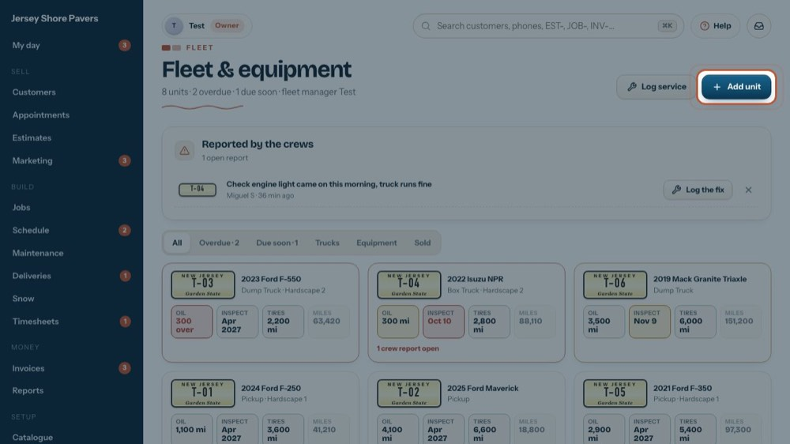
1Add unit
Opens the form. Its fields match your fleet spreadsheet.
-
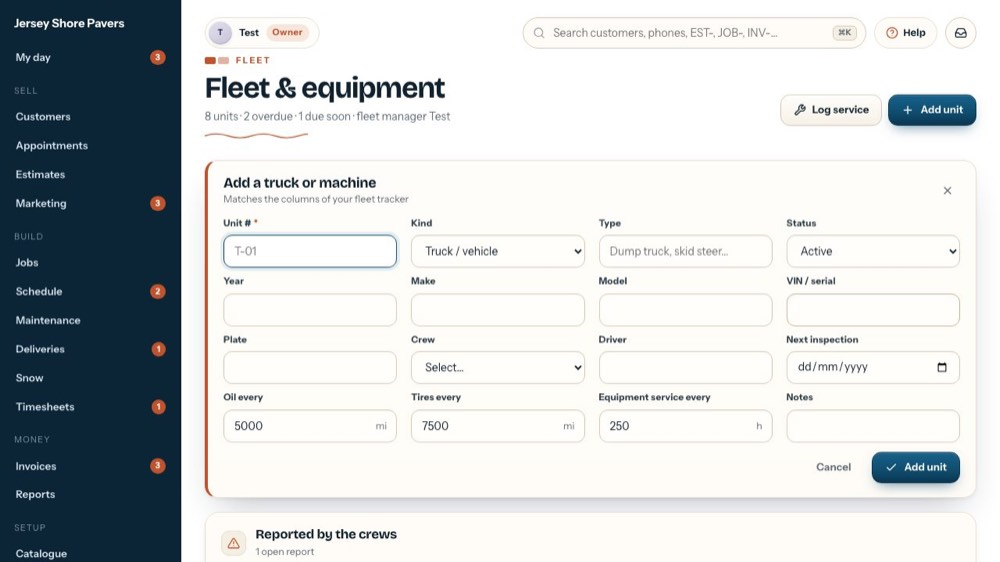
2Unit number
The number on the truck or machine (T-01, E-02). It's the only thing you must fill in.
-
3
Truck or equipment
Truck / vehicle counts miles (oil, tires, inspection). Equipment counts engine hours.
-
 4
4Type
Dump truck, pickup, skid steer… It shows under the name on its card.
-
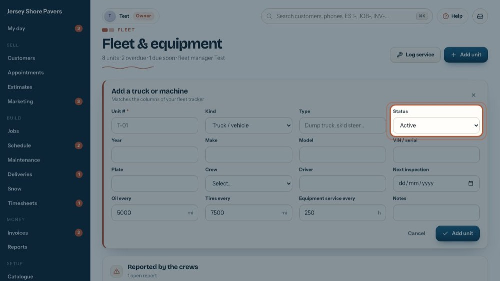
5Status
Active, In shop, Out of service, Spare, Reserved or Sold. Sold units leave the main list (see them under Sold).
-
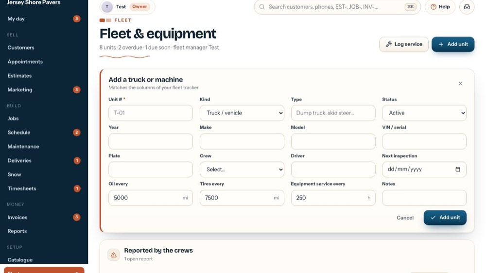
6Year, make, model, VIN
Year, make and model, then the VIN or serial number.
-
 7
7Plate
The licence plate.
-
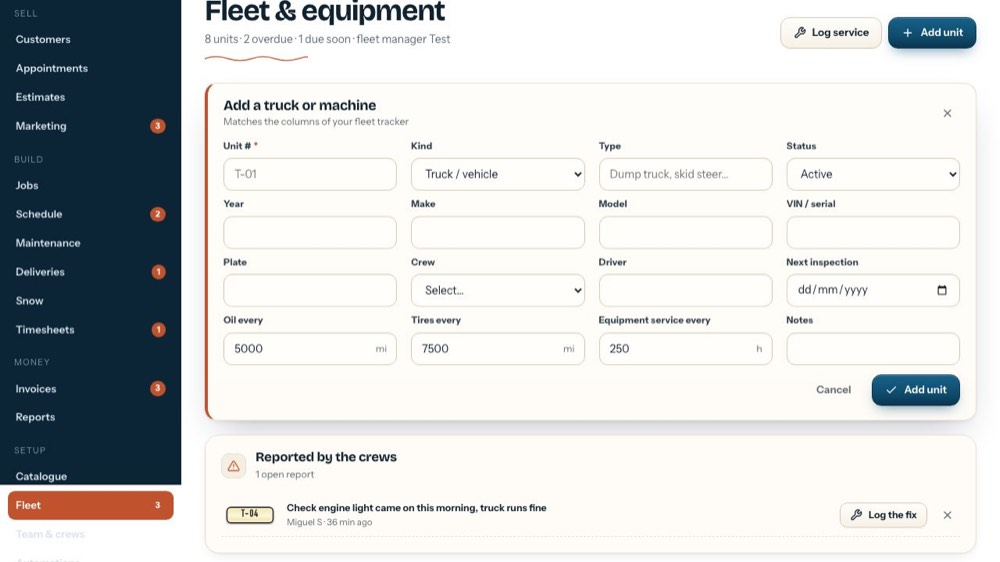
8Crew or driver
The crew that usually takes it, or a driver's name. Its card shows it.
-
 9
9Next inspection
The date of the next inspection. It shows amber when close and red when past.
-
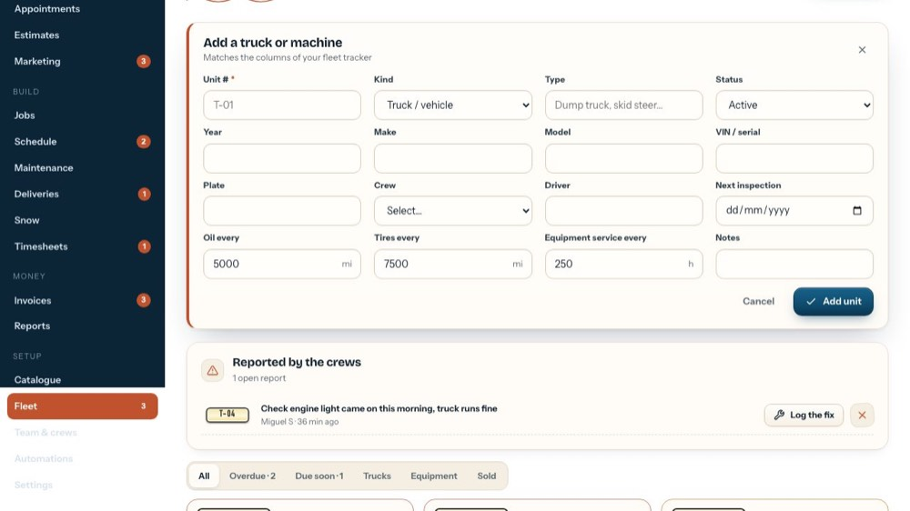
10Oil every
Miles between oil changes. The next one is due this many miles after the last oil change you log.
-
11
Tires every
Miles between tire services.
-
 12
12Equipment service every
Engine hours between services, for machines.
-
 13
13Notes
Anything else worth knowing about it.
-
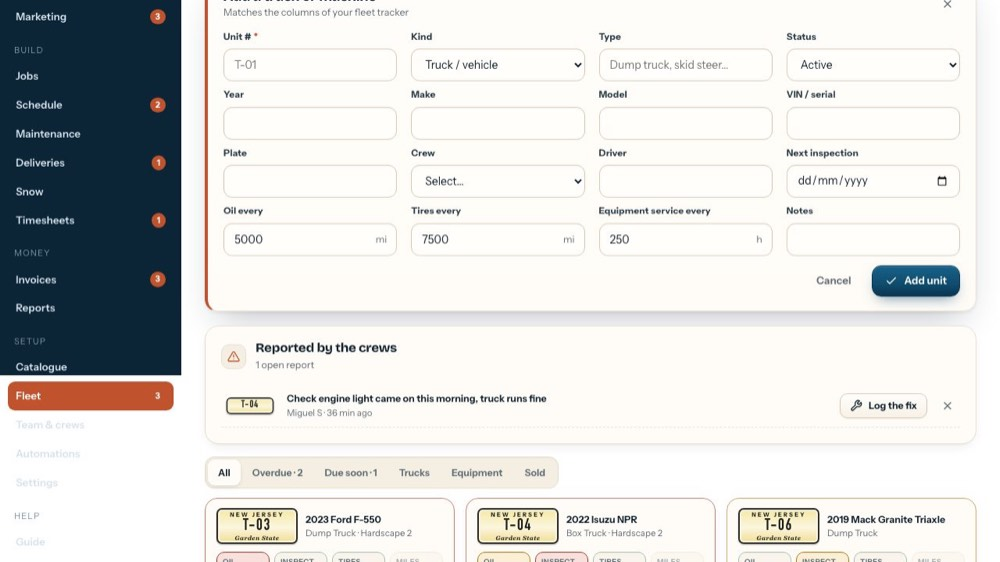
14Add unit
Saves it. Then log its last oil change so its due dates start.
-
 15
15Close the form
The tour closes it without saving.
-
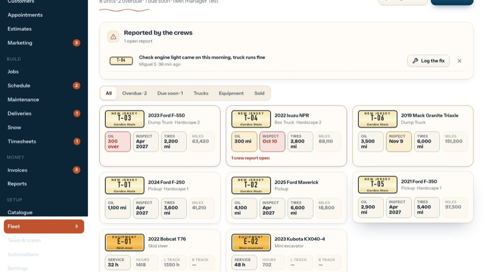
16Change a unit
To change one, open it…
-
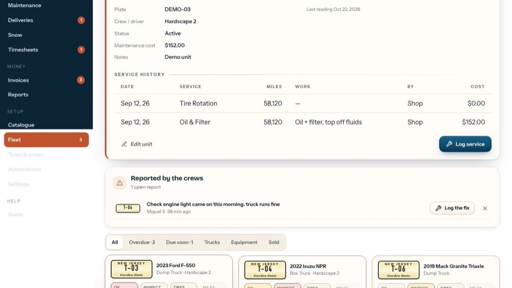
17Edit unit
…and press Edit unit: the same form, filled in.
-
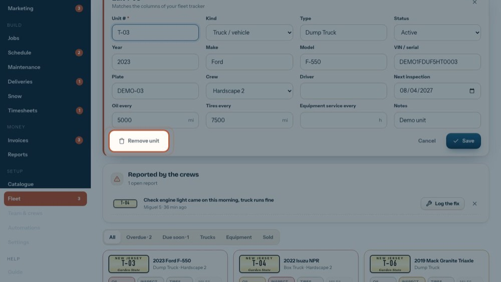
18Remove unit
Owner or office only. It asks first. Mark the unit Sold instead to keep its history.
-
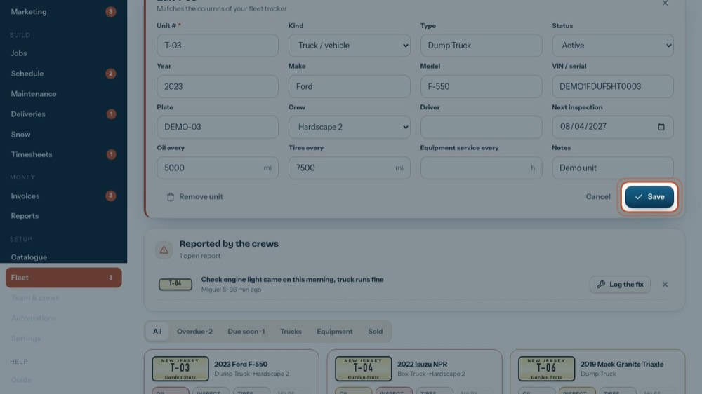
19Save
Save keeps the changes.
-
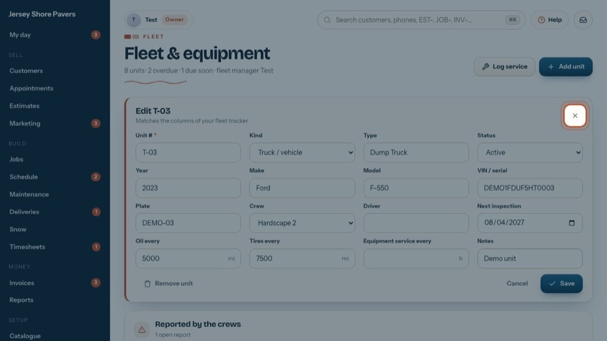
20Close it
The tour closes it without saving.